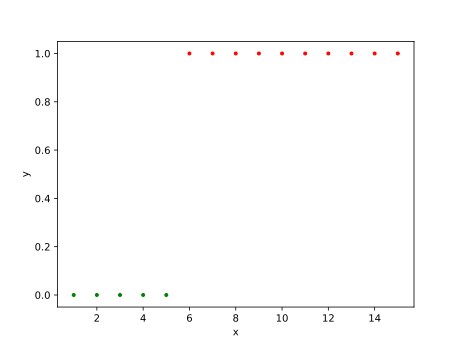

逻辑回归
发布日期: 2021-11-25更新日期: 2023-07-21
逻辑回归是不同于线性回归的另一种机器学习的算法
线性回归的不足
当数据的分布情况是这样子的时候，
线性回归得出的模型效果不好：

于是我们希望有数学模型能够描述这种关系，
这个函数模型即：h(x)=1+e−θTx1^[别问为什么，问就是经验公式。]
数学原理
概率函数
设h∗θ(x)=1+e−θTx1，
P(y=1∣x;θ)=h∗θ(x)，
P(y=0∣x;θ)=1−h_θ(x)，
当y∈{0,1}时，我们可以这样子优化一下：
P(y∣x;θ)=hθ(x)y(1−hθ(x))1−y
当y=1时，P(y∣x;θ)=h_θ(x)，即y=1的概率。
当y=0时，P(y∣x;θ)=1−h_θ(x)，即y=0的概率。
优雅！
进行极大似然估计
设似然函数：
L(θ)=i=1∏mP(y(i)∣x(i);θ)
l(θ)=∂θ∂L(θ)
可得：
∂θj∂l(θ)=i=1∑m(y(i)−hθ(x(i)))xj(i)
梯度上升求解
类似梯度下降，当函数具有最大值时，
使随机选取的点x0进行如下更新^[详情见文章{% post_link gradient-descent %}]：
x1=x0+αdxdf(x0)
即可得到：
θj=θj+∂i=1∑m(y(i)−hθ(x(i)))xj(i)
与线性回归的对比
最后推导得出的公式与线性回归的推导公式十分相似，
但实际上h_θ(x)表示的函数不再是线性的，
因此，逻辑回归与线性回归实际上是不相同的。